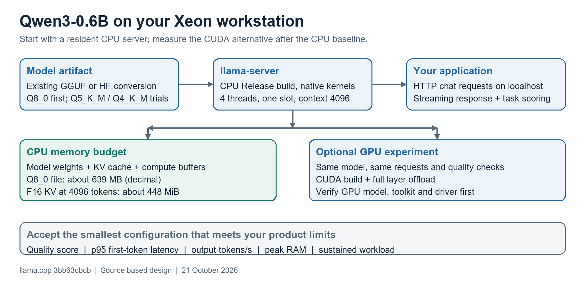

A Linux CPU deployment runbook with an optional CUDA comparison
Prepared 21 October 2026. Commands checked against local llama.cpp revision 3bb63cbcb. Assumptions: standard Qwen3-0.6B chat model, Ubuntu/Debian Linux, one initial concurrent request. Your Linux host was not accessed; no host benchmark or deployment has been performed.
Recommended first configuration: Q8_0 GGUF, CPU only, 4 inference threads, 4 prompt threads, one server slot, 4096 tokens of context and F16 KV cache. Start with thinking disabled for interactive tasks, then assess thinking separately for tasks that need it.
Figure 1. Proposed deployment. Memory values describe the model file and calculated cache storage, not measured process RAM. Sources: local server/benchmark documentation and Qwen model/configuration [1-4].

The Gold 5222 has 4 physical cores and 8 hardware threads per processor, with AVX2 and AVX-512 support [5]. Your pasted entry does not establish the total socket count or RAM. Start at 4 threads, then measure 2, 4 and 8; more threads can increase overhead or cross NUMA boundaries.
For this small model, Q8_0 is a reasonable first quality comparison. Lower precision is an experiment, not a guaranteed latency improvement. Verify the model is Qwen3-0.6B rather than Qwen3-0.6B-Base. Preserve your own checkpoint if it is fine-tuned.
Run these commands on the Linux workstation. They inspect topology, available memory and the exact GPU identity. The CPU MHz value in one /proc/cpuinfo snapshot is not its fixed operating speed.
lscpu lscpu -e=CPU,CORE,SOCKET,NODE free -h nvidia-smi --query-gpu=name,driver_version,memory.total --format=csv nvcc --version
A missing nvcc is harmless for CPU deployment. If multiple sockets or NUMA nodes appear, also run numactl --hardware after installing numactl below.
Use an existing clean llama.cpp checkout if you already have one. The clone below is for a new directory. Native CPU builds target the machine on which they are compiled; rebuild when moving to a CPU with different instruction support.
sudo apt-get update sudo apt-get install -y build-essential cmake git curl \ libssl-dev python3-venv numactl git clone https://github.com/ggml-org/llama.cpp.git "$HOME/llama.cpp" cd "$HOME/llama.cpp" git rev-parse HEAD cmake -S . -B build-cpu -DCMAKE_BUILD_TYPE=Release \ -DGGML_NATIVE=ON -DGGML_CUDA=OFF cmake --build build-cpu -j 4 \ --target llama-server llama-cli llama-quantize llama-bench ./build-cpu/bin/llama-server --help
Record the revision and build settings. These examples use --reasoning off, which exists in the reviewed checkout. If an older binary lacks it, its equivalent is --chat-template-kwargs '{"enable_thinking":false}'. Prefer the current option when available. No CUDA toolkit is required by this CPU build.
Existing GGUF: use its absolute filename with -m on the next page. Your own safetensors checkpoint: use the conversion steps on page 4. Unmodified official model: this download avoids the conversion setup; it is not a substitute for your fine-tuned weights.
mkdir -p models curl -fL --retry 3 \ 'https://huggingface.co/Qwen/Qwen3-0.6B-GGUF/resolve/main/Qwen3-0.6B-Q8_0.gguf' \ -o models/Qwen3-0.6B-Q8_0.gguf sha256sum models/Qwen3-0.6B-Q8_0.gguf
The official repository currently publishes Q8_0 at about 639 MB [3]. Record the file hash after downloading; retain the same artifact for all CPU/GPU comparisons. Build and conversion need additional disk and RAM beyond inference.
From the llama.cpp directory, start the following in a terminal. Replace the model path if you use your own GGUF. Keep this server running while testing from a second terminal.
./build-cpu/bin/llama-server \ -m models/Qwen3-0.6B-Q8_0.gguf \ --alias qwen3-0.6b \ -ngl 0 -t 4 -tb 4 -c 4096 -np 1 \ -b 512 -ub 128 -ctk f16 -ctv f16 \ --jinja --reasoning off \ --temp 0.7 --top-p 0.8 --top-k 20 --min-p 0 \ --presence-penalty 1.5 \ --host 127.0.0.1 --port 8080 --metrics
| Setting | Effect |
|---|---|
| -ngl 0 | Explicitly keeps transformer layers on the CPU. |
| -t 4 / -tb 4 | Separates generation and prompt-processing thread settings. |
| -c 4096 / -np 1 | A simple one-request baseline with a bounded context budget. |
| -b 512 / -ub 128 | Limits logical batch and physical microbatch sizes; tune after baseline. |
| --reasoning off | Disables thinking through the model chat template. Changes behavior, not just speed. |
| --host 127.0.0.1 | Local application access. Use an authenticated gateway for remote clients. |
curl -f http://127.0.0.1:8080/health
curl -sS http://127.0.0.1:8080/v1/chat/completions \
-H 'Content-Type: application/json' \
-d '{
"model": "qwen3-0.6b",
"messages": [{"role":"user","content":"Explain CPU cache briefly."}],
"max_tokens": 256,
"temperature": 0.7,
"top_p": 0.8,
"top_k": 20,
"min_p": 0,
"presence_penalty": 1.5,
"stream": false
}'The API runs locally and needs no OpenAI account. /health returns readiness after loading. For interactive delivery, set stream to true and use curl -N or your streaming client. An output limit of 256 is a quick smoke test; increase it when the task needs longer answers. The prompt, chat template and output must fit the context budget.
The sampling values follow Qwen's non-thinking GGUF guidance [2]. They are a starting point for task evaluation. Thinking can improve complex-task quality while generating many extra tokens; compare it as a separate product setting rather than attributing its latency to quantization.
Skip this page if your existing GGUF is already the artifact you want. For an original Hugging Face model directory, include config.json, tokenizer files, chat template and all weight shards. A LoRA adapter alone is not a complete checkpoint; use an appropriate merged model or the supported adapter-loading workflow.
Run in the same llama.cpp checkout. Use a Python version supported by its requirements; Python 3.11 or 3.12 is a practical starting point. The isolated environment prevents changing system Python packages. Conversion can run on another machine and the resulting GGUF can be copied to the Xeon.
mkdir -p models/local python3 -m venv .venv-convert source .venv-convert/bin/activate python -m pip install --upgrade pip python -m pip install -r requirements/requirements-convert_hf_to_gguf.txt python convert_hf_to_gguf.py /absolute/path/to/Qwen3-0.6B \ --outfile models/local/Qwen3-0.6B-BF16.gguf --outtype bf16
BF16 matches the published checkpoint storage dtype [4]. This is an evaluation reference, not a claim that BF16 compute is fast on Cascade Lake. Load it with the same server command, tokenizer, thinking mode and representative requests before comparing quantized versions.
./build-cpu/bin/llama-quantize \ models/local/Qwen3-0.6B-BF16.gguf models/local/Qwen3-0.6B-Q8_0.gguf Q8_0 ./build-cpu/bin/llama-quantize \ models/local/Qwen3-0.6B-BF16.gguf models/local/Qwen3-0.6B-Q5_K_M.gguf Q5_K_M ./build-cpu/bin/llama-quantize \ models/local/Qwen3-0.6B-BF16.gguf models/local/Qwen3-0.6B-Q4_K_M.gguf Q4_K_M sha256sum models/local/Qwen3-0.6B-*.gguf
These outputs use models/local to keep them separate from the official download. Set the server or benchmark -m path to the chosen file in this directory. Do not quantize an existing Q8 file down to Q4 for the main comparison; returning to the high-precision source avoids compounding quantization error.
| Code boundary | Role in this deployment |
|---|---|
| convert_hf_to_gguf.py; conversion/qwen.py; conversion/base.py | Recognizes the Qwen architecture, transforms/maps tensors, and writes the GGUF with model and tokenizer metadata. |
| tools/quantize/quantize.cpp; src/llama-quant.cpp | Parses the quantization policy and chooses per-tensor formats. Q5_K_M and Q4_K_M are mixed policies, not uniform 5-bit or 4-bit files. |
| tools/server; ggml/src/ggml-cpu | Keeps the model loaded, applies the chat template and executes prompt/generation work using CPU kernels. |
Calibration with llama-imatrix is a later option if lower precision needs quality recovery. Start with ordinary Q8/Q5/Q4 comparisons so you can identify whether calibration is necessary for your task. No model-specific source change is needed for standard Qwen3-0.6B.
Stop the serving process during standalone benchmarks. Keep warmup enabled. Run under the same host load, power policy and topology so differences remain interpretable.
./build-cpu/bin/llama-bench \ -m models/Qwen3-0.6B-Q8_0.gguf -ngl 0 \ -t 2,4,8 -p 512 -n 128 -b 512 -ub 128 -r 5 -o json \ > qwen3-q8-cpu.json
pp512 measures prompt processing and tg128 measures generation. llama-bench excludes tokenization and sampling [1]. Repeat for Q5_K_M and Q4_K_M, then test real API requests with short and long histories. For a generation test with an existing 2048-token context, add -d 2048. Do not treat a short-context tg result as long-context latency.
Conventional F16 KV bytes = 2 * layers * KV_heads * head_dim
* context_tokens * 2 bytes
Qwen3-0.6B: 2 * 28 * 8 * 128 * 4096 * 2 = 448 MiB| One-sequence context | Calculated F16 KV payload | Interpretation |
|---|---|---|
| 2048 tokens | 224 MiB | Useful if your complete input/output fits. |
| 4096 tokens | 448 MiB | Recommended initial context budget. |
| 8192 tokens | 896 MiB | Use only when the task needs the extra history. |
These calculations use the published architecture [4] and exclude allocator, alignment and compute buffers. A 639 MB Q8 file plus 448 MiB cache is already about 1.03 GiB before other memory. Reserve additional RAM for scratch space, the OS and your application; measure peak RSS/PSS and swap activity under sustained traffic. mmap file size is not total RAM usage.
Evaluate the same 50-100 representative prompts against BF16 (or Q8 as a provisional reference), with identical context, template, sampling and thinking mode. Score correctness, required JSON/tool format and business rules. Inspect every new critical failure; repeat stochastic cases instead of relying on one answer.
| Candidate | Keep it when... |
|---|---|
| Q8_0 | It meets the memory/latency limits and gives useful quality margin. |
| Q5_K_M | It gives a measured speed/RAM benefit while staying within your allowed quality loss. |
| Q4_K_M | The extra saving matters and it still passes the same task-quality gate. |
Set limits before selecting: for example, at most 1 percentage point of task-score loss, an application-specific p95 time-to-first-token limit, and a measured peak RAM ceiling. These are example acceptance criteria, not results. Also record total answer latency and output length. Try -tb 8 separately; try -ub 256 only after selecting threads. On a multi-node host, compare node-local binding with the unbound baseline before adopting it.
After the foreground smoke test and benchmark, a systemd service provides restart and logs. This example assumes the user is daigd, the checkout is /home/daigd/llama.cpp and the Q8 file lives under its models directory. Adjust those paths to the real host. Stop the foreground server before starting the service on port 8080.
Save this unit as /etc/systemd/system/qwen3-cpu.service using sudoedit. The backslashes continue a single ExecStart command; systemd does not run a shell for this line.
[Unit] Description=Qwen3 CPU inference After=network.target [Service] Type=simple User=daigd WorkingDirectory=/home/daigd/llama.cpp ExecStart=/home/daigd/llama.cpp/build-cpu/bin/llama-server \ -m /home/daigd/llama.cpp/models/Qwen3-0.6B-Q8_0.gguf \ --alias qwen3-0.6b -ngl 0 -t 4 -tb 4 -c 4096 -np 1 \ -b 512 -ub 128 -ctk f16 -ctv f16 --jinja --reasoning off \ --temp 0.7 --top-p 0.8 --top-k 20 --min-p 0 \ --presence-penalty 1.5 --host 127.0.0.1 --port 8080 --metrics Restart=on-failure RestartSec=3 [Install] WantedBy=multi-user.target
sudo systemctl daemon-reload sudo systemctl enable --now qwen3-cpu systemctl status qwen3-cpu --no-pager journalctl -u qwen3-cpu -n 60 --no-pager curl -f http://127.0.0.1:8080/health
Use http://127.0.0.1:8080/v1 as the application API base URL and qwen3-0.6b as its model identifier. Queue requests initially; one slot means concurrent arrivals may wait. Track queueing delay separately from model generation. If remote access is needed, put authentication and TLS in your existing gateway and keep the inference server bound to localhost.
Keep the model resident between requests. Record the executable revision, GGUF hash, startup command, tokenizer/template and evaluation dataset. When changing -np, recheck per-request context capacity, total KV allocation and p95 latency. Watch /metrics and system memory; do not accept a configuration that starts swapping under your intended load.
Illegal instruction: rebuild on this host and inspect the CPU flags exposed by the OS/VM. Unknown model/option: compare the model architecture and binary revision. Unexpected long answers: verify thinking mode and output budget. Slow decoding: inspect thread count, competing jobs, NUMA locality and sustained clock behavior before trying more threads. Poor answers: check model variant, template and truncation before blaming quantization.
Your output reports 24 GiB of VRAM, but truncates the GPU name. Do not infer its exact model from memory or power. The CPU deployment above works independently of this GPU setup. A CUDA experiment is reasonable if CPU latency or concurrent throughput misses your target.
nvidia-smi --query-gpu=name,driver_version,memory.total --format=csv nvcc --version
Driver 525.105.17 is installed. The CUDA 12.0 label in nvidia-smi describes driver compatibility; it does not prove the toolkit is installed. NVIDIA lists CUDA 12.x minor compatibility on the 525 driver family, with feature/PTX limitations. CUDA 13.x requires the 580 family or newer under that compatibility table [6].
Use a toolkit/driver combination supported by both the actual GPU and this llama.cpp revision. A recent CUDA build can need a newer driver despite belonging to CUDA 12.x. If your installed toolkit is compatible, build below; otherwise align the stack with your system administrator before the experiment. A container does not replace the host NVIDIA driver.
cmake -S . -B build-cuda -DCMAKE_BUILD_TYPE=Release \ -DGGML_CUDA=ON cmake --build build-cuda -j 4 --target llama-server llama-bench ./build-cuda/bin/llama-bench \ -m models/Qwen3-0.6B-Q8_0.gguf -ngl 99 \ -t 4 -p 512 -n 128 -b 512 -ub 128 -r 5 -o json \ > qwen3-q8-cuda.json
For the server experiment, use build-cuda/bin/llama-server with the same settings as page 3, changing -ngl 0 to -ngl 99. Check startup logs for full offload. A GPU can offer higher throughput, but tiny-model scheduling overhead and your application workload determine the actual latency benefit. Compare quality, p95 latency, peak RAM/VRAM and, if relevant, energy per request. No speedup estimate is justified before measuring.
[1] Local benchmark scope and options
[2] Qwen official sampling and thinking guidance
[3] Official Q8_0 artifact and file size
[5] Intel Xeon Gold 5222 specifications
[6] NVIDIA CUDA minor-version compatibility
Local server options, API and readiness
Local CPU/CUDA build documentation
Local quantization implementation
Reviewed source: 3bb63cbcbfb62056c84fe9e521b0f3d756d29c32. This is a deployment recipe with original diagrams and derived memory estimates. Linux build success, model responses, quality and performance still require running the listed checks on your workstation.